Geografía
484 recursos de Geografía en español, sin preparación y con solucionario: fichas de lectura, búsquedas del tesoro y más, filtrables por grado.
484 recursos
Grado
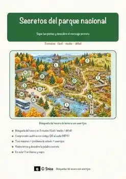
«Secretos del parque nacional» – Búsqueda del tesoro de lectura
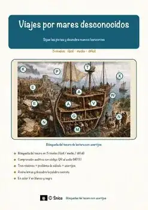
«Viajes por mares desconocidos» – Búsqueda del tesoro de lectura
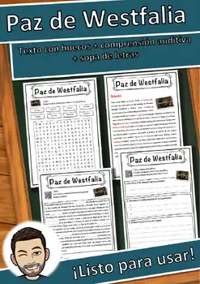
Paz de Westfalia – Ficha de lectura: texto con huecos, comprensión auditiva y sopa de letras
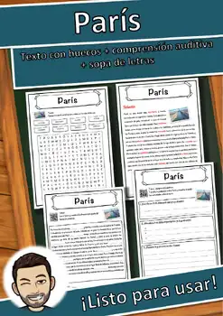
París – Ficha de lectura: texto con huecos, comprensión auditiva y sopa de letras
Panthera uncia – Ficha de lectura: texto con huecos, comprensión auditiva y sopa de letras
Pantalón vaquero – Ficha de lectura: texto con huecos, comprensión auditiva y sopa de letras
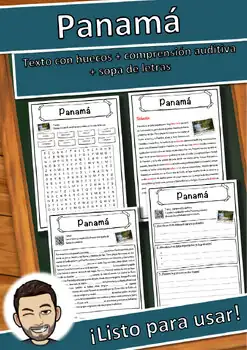
Panamá – Ficha de lectura: texto con huecos, comprensión auditiva y sopa de letras
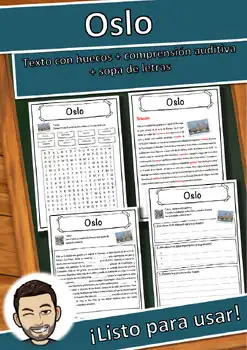
Oslo – Ficha de lectura: texto con huecos, comprensión auditiva y sopa de letras
Oriente Próximo – Ficha de lectura: texto con huecos, comprensión auditiva y sopa de letras
Orient Express – Ficha de lectura: texto con huecos, comprensión auditiva y sopa de letras
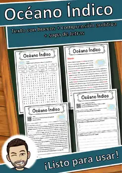
Océano Índico – Ficha de lectura: texto con huecos, comprensión auditiva y sopa de letras
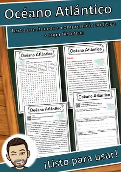
Océano Atlántico – Ficha de lectura: texto con huecos, comprensión auditiva y sopa de letras
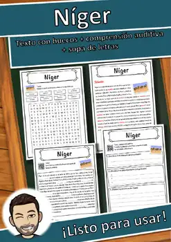
Níger – Ficha de lectura: texto con huecos, comprensión auditiva y sopa de letras
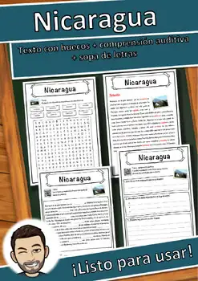
Nicaragua – Ficha de lectura: texto con huecos, comprensión auditiva y sopa de letras
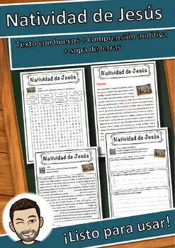
Natividad de Jesús – Ficha de lectura: texto con huecos, comprensión auditiva y sopa de letras
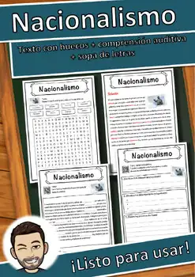
Nacionalismo – Ficha de lectura: texto con huecos, comprensión auditiva y sopa de letras
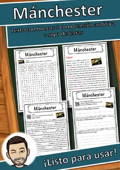
Mánchester – Ficha de lectura: texto con huecos, comprensión auditiva y sopa de letras
Montes Cárpatos – Ficha de lectura: texto con huecos, comprensión auditiva y sopa de letras
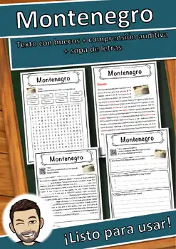
Montenegro – Ficha de lectura: texto con huecos, comprensión auditiva y sopa de letras
Monte Everest – Ficha de lectura: texto con huecos, comprensión auditiva y sopa de letras
Montañas de arenisca del Elba – Ficha de lectura: texto con huecos, comprensión auditiva y sopa de letras
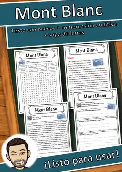
Mont Blanc – Ficha de lectura: texto con huecos, comprensión auditiva y sopa de letras
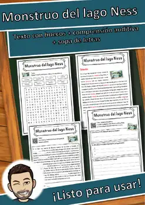
Monstruo del lago Ness – Ficha de lectura: texto con huecos, comprensión auditiva y sopa de letras
Mongolia – Ficha de lectura: texto con huecos, comprensión auditiva y sopa de letras
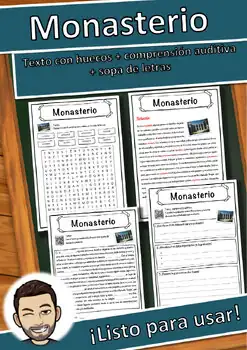
Monasterio – Ficha de lectura: texto con huecos, comprensión auditiva y sopa de letras
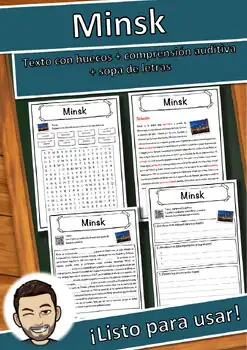
Minsk – Ficha de lectura: texto con huecos, comprensión auditiva y sopa de letras
Minero – Ficha de lectura: texto con huecos, comprensión auditiva y sopa de letras
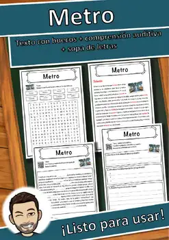
Metro – Ficha de lectura: texto con huecos, comprensión auditiva y sopa de letras
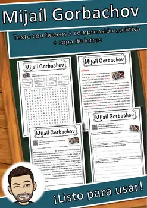
Mijaíl Gorbachov – Ficha de lectura: texto con huecos, comprensión auditiva y sopa de letras
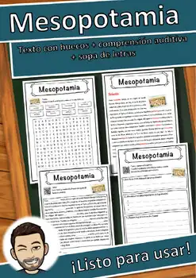
Mesopotamia – Ficha de lectura: texto con huecos, comprensión auditiva y sopa de letras
Mar Mediterráneo – Ficha de lectura: texto con huecos, comprensión auditiva y sopa de letras
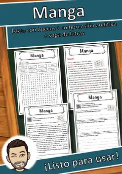
Manga – Ficha de lectura: texto con huecos, comprensión auditiva y sopa de letras
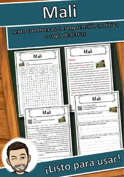
Mali – Ficha de lectura: texto con huecos, comprensión auditiva y sopa de letras
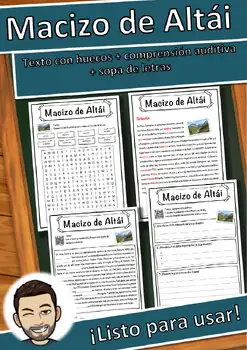
Macizo de Altái – Ficha de lectura: texto con huecos, comprensión auditiva y sopa de letras
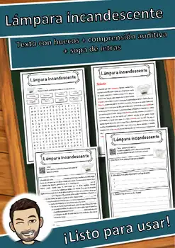
Lámpara incandescente – Ficha de lectura: texto con huecos, comprensión auditiva y sopa de letras
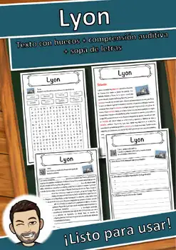
Lyon – Ficha de lectura: texto con huecos, comprensión auditiva y sopa de letras
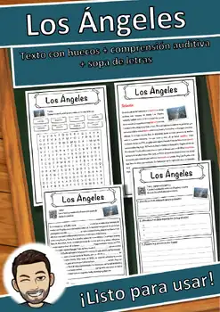
Los Ángeles – Ficha de lectura: texto con huecos, comprensión auditiva y sopa de letras
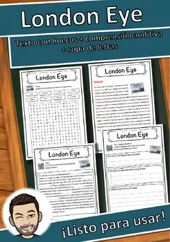
London Eye – Ficha de lectura: texto con huecos, comprensión auditiva y sopa de letras
Lituania – Ficha de lectura: texto con huecos, comprensión auditiva y sopa de letras
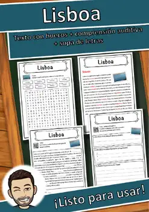
Lisboa – Ficha de lectura: texto con huecos, comprensión auditiva y sopa de letras
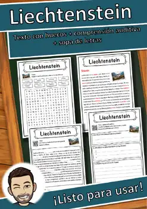
Liechtenstein – Ficha de lectura: texto con huecos, comprensión auditiva y sopa de letras
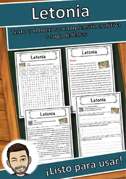
Letonia – Ficha de lectura: texto con huecos, comprensión auditiva y sopa de letras
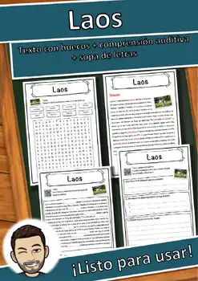
Laos – Ficha de lectura: texto con huecos, comprensión auditiva y sopa de letras
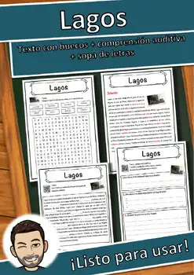
Lagos – Ficha de lectura: texto con huecos, comprensión auditiva y sopa de letras
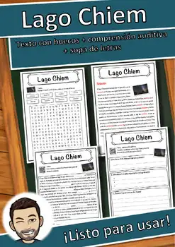
Lago Chiem – Ficha de lectura: texto con huecos, comprensión auditiva y sopa de letras
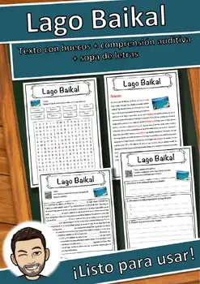
Lago Baikal – Ficha de lectura: texto con huecos, comprensión auditiva y sopa de letras
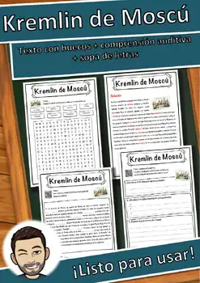
Kremlin de Moscú – Ficha de lectura: texto con huecos, comprensión auditiva y sopa de letras
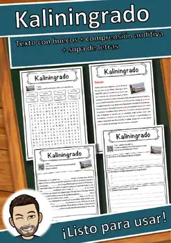
Kaliningrado – Ficha de lectura: texto con huecos, comprensión auditiva y sopa de letras
No se encontraron recursos. Prueba con otra palabra o con otro filtro.